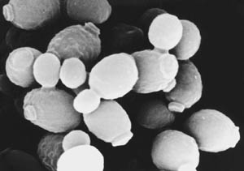

Iako se nekim predmetima i proizvodima koristimo svakoga dana, naše je znanje o njima tek površno i nepotpuno. Posljednjih se tjedana u medijima često moglo čitati o velikoj potražnji i nedostatku pekarskoga kvasca. Hrvatska tehnička enciklopedija donosi priču o kvascu – proizvodu dobivenom razmnožavanjem mikroskopski sitnih jednostaničnih gljivica (kvasci ili kvaščeve gljivice) – njegovoj uporabi te načinu i povijesti proizvodnje.
Kvaščeve gljivice ne tvore jednu filogenetsku skupinu, već obuhvaćaju više različitih skupina koje međusobno nisu srodne. Razmnožavaju se nespolno (pupanjem ili staničnom diobom) i spolno (stvaranjem askusa ili bazidija). Neki kvasci mogu izazvati bolesti kod ljudi i životinja (primjerice kvasac Candida Albicans), a neki su važni u biotehnologiji. Upotrebljavaju se u pekarstvu, u proizvodnji piva i vina, u prehrambenoj industriji i proizvodnji vitaminskih pripravaka.
Proces vrenja (fermentacije) razjasnio je francuski kemičar i biolog Louis Pasteur, utvrdivši da vrenje uzrokuju mikroskopska živa bića kvasci, te da svako vrenje nastaje aktivnošću specifičnoga mikroorganizma. Proizvodnja je tijekom vremena unaprijeđena na više načina. Danas se pekarski kvasac, aktivna kvaščeva biomasa, proizvodi u bioreaktorima (fermentorima).
U industrijskoj biotehnološkoj proizvodnji primjenjuje se tek 20-ak rodova kvasaca, a najznačajniji su askomiceti iz roda Saccharomyces, koji su važni uzročnici vrenja (fermentacije) pa se rabe kao pivski, vinski, alkoholni i pekarski kvasac. Pekarski kvasac uzgaja se uz intenzivnu aeraciju na hranjivim podlogama na bazi šećerne sirovine (najčešće melase), fosfornih i dušičnih spojeva. Sojevi Saccharomyces cerevisiae preinačeni metodama genetičkog inženjerstva se u nekoliko posljednjih desetljeća rabe u suvremenoj farmaceutskoj proizvodnji bioloških lijekova (npr. inzulina).

Kvasci ili kvaščeve gljivice
Proizvodnja kvasca u Hrvatskoj datira od kraja XIX. st. i tradicionalno je sastavni dio naše industrije piva i etilnog alkohola (špirita). Kvasac se kao dio proizvodnje piva proizvodio u pivovarama u Daruvaru, Osijeku, Karlovcu i Zagrebu. Suhi pekarski kvasac proizvodile su tvornice u Savskom Marofu, Koprivnici i Županji. Znate li što je Prva zagrebačka tvornica pjenice i gdje je osnovana? Što je kvaščevo mlijeko? Koja poznata mliječna prerađevina nastaje specifičnim vrenjem mlijeka u prisutnosti kulture koja sadrži i kvasce? Odgovore možete pronaći u Hrvatskoj tehničkoj enciklopediji.